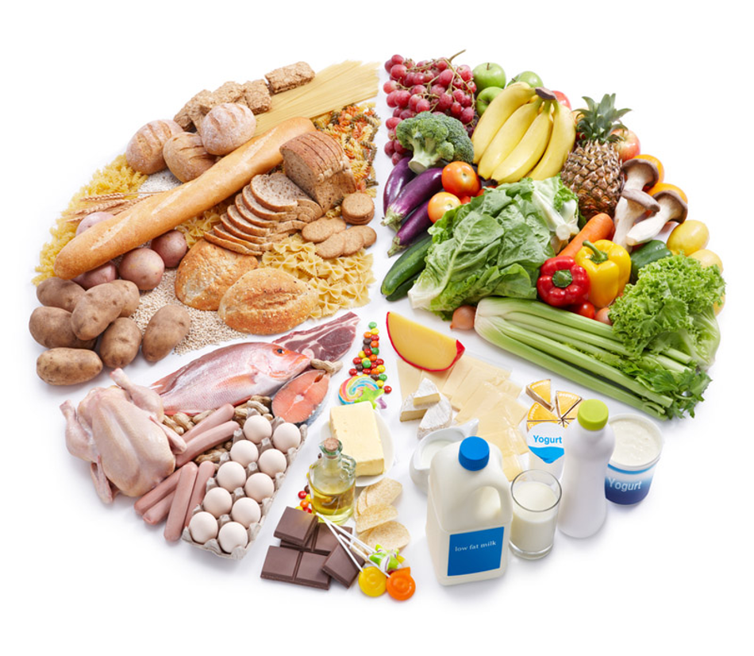

About Us
About this project
This is a laboratory project about reducing food waste and helping households use food before it spoils.
Our purpose
FoodSaver helps people manage their ingredients, plan their shopping and find simple ways to use food before its expiry date.
What we learned
During this laboratory project, we learned how to create websites using HTML and CSS, organize web pages and design a simple user-friendly interface.
Technologies used
HTML
CSS
AI Concept

Save food. Save money.
Small changes in everyday habits can help reduce unnecessary food waste.